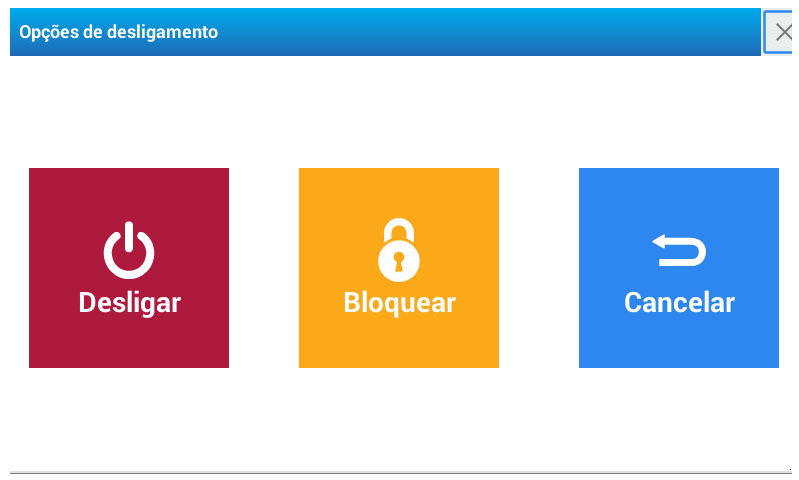

Ligar e desligar o equipamento
Assim que conectar o equipamento a rede de alimentação, somente é necessário pressionar a tecla para liga-lo. Uma vez realizada esta ação, será ajustado de forma automática o zero inicial da balança (isto poderá demorar alguns segundos).
Finalizada esta operação, a balança estará pronta para uso.
É importante que o equipamento se mantenha estável durante este processo. Caso ocorra movimentação na bandeja, O processo será reiniciado. Para desligar o equipamento, mantenha pressionada a tecla , até observar as opções no visor, e confirmação sonora e visual de desligado.
